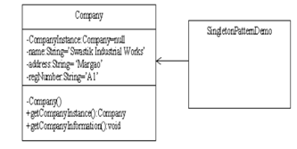

Software Layering, Styles And Evaluation
Abstract
Layering for any software indicates how the modeling of the software has been created where each module is dependent on the other module. Such interdependence on modules indicate the ways in which such modules can be relatively organized so that the software is least affected of changes at later stages.
Author:
Subodh Prasad
Paper Transcript of Paper Titled :
SOFTWARE LAYERING, STYLES AND EVALUATION
Software Layering, Styles and Evaluation
Subodh Prasad
PhD Research Scholar
Information Technology Department, Kumaun University
Nainital, Uttarakhand, India
Abstract— Layering for any software indicates how the modeling of the software has been created where each module is dependent on the other module. Such interdependence on modules indicate the ways in which such modules can be relatively organized so that the software is least affected of changes at later stages.
Keywords-Layers of software; Open layer; Closed layer (key words)
Introduction
Two methods are mostly used to divide a System into subsystems: Layering and partitioning.
Layering is so called because the different subsystems represent different levels of abstraction.
Each layer corresponds to a sub-system. The layered architecture can be divided into two types: open and closed layered architecture
A subsystem groups together the elements of a system that share some common properties. For example if we are dealing with a banking software, then as a whole the banking software would be divided into various parts, like, the teller interface, the passbook printing interface, the account details interface etc. All these are the subsystems of the complete system. Without these subsystems, the system stands no chance.
So the benefits are that it assists the developers in coping with complexity of the complete system, by dividing it into various pieces, and these pieces when joined together complete the big picture. We can imagine a big jigsaw puzzle in which there are multiple jigsaws which create a big picture. But in the absence of these individual pieces, the big picture can’t be realized. And hence we say that the subsystem is an indispensable part of any system.
Now creating a new application is also an easy job, because we have multiple subsystems which can do certain kinds of works in a predefined manner. Hence the reusability of such subsystems is also very high.
If the software has to be changed at a later stage then we can actually niche down to the exact part which requires the change. After reaching such a subsystem which has to be changed, we are rest assured that there are no effects to the subsystems which are running parallel to this subsystem. Only those subsystems will have to be changed whose input depended on the output of this subsystem. Avoids/Minimizes the ripple effects of the consequences of change.
Open layered Architecture
Here a layer ‘N’ can use the services of any of the layers that lie beneath it.
In open layered architecture, if ‘N’ and ‘N-1’ use the services provided by ‘N-5 ‘ and ‘N-8’ then any change to the interface of ‘N-5’ or ‘N-8’ will have an impact on ‘N’ and ‘N-1’.
Results in the increase in dependency, and a break in encapsulation, a very important principle in object - orientation, as every layer will have to know what services the other layers are providing.
So, there is an increase in difficulty when a layer needs to be changed.
Fig. Depiction of Open layered Architecture
In general terms, we can say that if any software is an Open Layered Architecture system then all the layers which are below any layer, if changed, will affect all those layers above it which depend on this layer only.
Other layers shall not be affected since the dependency is so maintained to be one directional and particular. Here in this type of architecture, if a change is proposed in any module at any later stages, then that change has to be carefully drafted and the ripple effects have to be keenly understood for it. Else the software shall not be able to show the required outputs, as and when needed.
Closed-Layered Architecture
Here, a layer 'N' uses the services of the next immediate layer only, i.e. ‘N-1’.
Layer ‘N-1 ‘uses the services of ‘N-2’ only and so on.
A closed layer architecture minimizes dependencies between layers as any layer uses the services of the layer beneath it only.
So if the interface of ‘N-1’ is changes, only the layer ‘N’ is affected.
Fig: Depiction of Closed-Layered Architecture
Broker Architecture for Distributed Systems
Whenever
In client-server architecture, a broker component is inserted between the clients and the servers in order to decouple both of them.
Instead of sending a request to a server, the client sends it to a broker.
The broker forwards the request to the server.
The server scrutinizes the request and sends its reply to the broker who then forwards it to the client.
In the case of multiple clients and servers it is not necessary for the server to know either the location of the servers or to which server it must send the request.
Only the broker possesses this information.
Fig: Depiction of Broker Architecture
pattern
Frameworks
Frameworks are partially completed software systems that may be targeted at a specific type of application.
An application system tailored to a particular organization may be developed from the framework by completing the unfinished elements and adding application-specific elements.
Reusable mini architecture that provides structure and behaviour common to all applications of this type.
Differences between Patterns and Frameworks
Patterns are more abstract and general than frameworks. A pattern is a description of the way that a type of problem can be solved, but the pattern is not itself a solution.
Unlike a framework, a pattern cannot be directly implemented in a particular software environment.
Patterns are more primitive than frameworks. A framework can employ several patterns but a pattern cannot incorporate a framework.
Pattern Catalogues and Pattern Languages
A pattern catalogue is a group of patterns that are related to some extent and may be used together or independently of each other.
The patterns in a Pattern Language are more closely related and work together to solve problems in a specific domain.
Documenting Patterns- Pattern Templates
Name: A pattern should be given a meaningful name (single word or a short phrase) that reflects the knowledge embodied by the pattern.
Problem: This is a description of the problem that the pattern addresses.
Context: It represents the circumstances or the preconditions under which it can occur.
Forces: They are the constraints or issues that must be addressed by the solution.
Solution: A solution must resolve all the forces in the given context.
CREATIONAL PATTERNS
They are concerned with the construction of instances of classes.
Separate the operation of an application from how its objects are created.
This decoupling gives the designer considerable flexibility in configuring all aspects of object creation.
There divisions are explained as under
Singleton Pattern
Consider a company "Geeta Bakery Works" which manufactures bakery products like Bread, Biscuits and Cakes.
The company buys the raw materials like Flour, Yeast, Eggs etc from different wholesalers, manufactures the products at its site and then sends the products to various retailers in Goa.
Now, the financial and accounting processes of this bakery are computerized.
One of the basic requirements of the bakery is that the name, address, telephone number and email id must be seen on every application and on every generated report.
This information must be kept at one location only but used by many different objects.
Solution 1: Keep the values of the above fields globally so that all objects can assess them. However, it violates the principle of encapsulation.
Solution 2: Create a class called "SBW" and include the fields as private attributes of the class.
Then let a public operation called getSBWdetails() give the stored details.
So other objects can access the details by sending a message to the object of the class SBW asking it to execute its getSBWdetails() operation.
But now the problem is any object that needs the details must be familiar with the identifier of the SBW object so that it can send messages to it.
Thus identifier of the object of class SBW must be globally accessible!
Solution 3: Define a class-scope operation named getSBWinstance() which will provide any client object with the identifier for the object of the class SBW.
This operation can be accessed by stating SBW.getSBWinstance().
Once it has the identifier, it can send getSBWdetails() message to the SBW object.
There must be one and only one instance of SBW.
So let the constructor of the class SBW be private, so it cant be accessed by any other object.
When should the SBW object be created?
It can be created when the message getSBWinstance() is sent for the first time.
After creation the identifier can be stored in the class-scope attribute SBWinstance so that the same identifier can be passed to any other client object who request for it.

Fig: Class Diagram for Singleton Pattern
Factory Pattern
When classes are designed, constructors are provided to build objects of the classes.
The factory pattern allows a client to create an object but it lets classes to decide which class to instantiate.
Consider a program to greet a teacher of MSc course depending upon whether the teacher has himself done MSc or has studied further and completed his PhD.
If the teacher ahs completed his PhD he is addressed as ‘Dr.’ else he is addressed as ‘Mr.’.
Fig: Factory Pattern
Create an abstract class “FacultyMember” with attributes surname, qualification and designation, the operation getname() and the abstract operation getDesignation().
There are 2 subclasses PhD and MSc.
They implement the getDesignation() operation in their own way i.e. Each one returns the appropriate designation.
Class FacultyFactory has an operation getFacultyMember() which takes in the name and qualification of a Faculty member.
Abstract Factory Pattern
It churns out either an object of class MSc or an object of class PhD.
It is a pattern that is at one level of abstraction higher than the Factory pattern.
Purpose: To create factories that will in turn churn out required objects.
Suppose the problem is of planting crops, depending upon the season.
3 types of seasons: Kharif, Rabi and Waigani.
In each season, 3 types of crops grown: commercial, plantation and field.
The problem is: Depending upon the type of season the user selects, he must be given the names of commercial, plantation and field crops.
There is an abstract class called ‘CropSeason’.It has 4 methods: getCommercialCrop(), getPlantationCrop(), getFieldCrop() and getSeasonName().
3 classes namely Kharif, Rabi and Waigani inherit from the class CropSeason.
Each of these classes will implement the methods present in the abstract class ‘CropSeason’.
Purpose of subclasses: To return the object of the Crop class that correspond to the Commercial, Plantation and Field types in a particular season. i.e. If the planter wants to plant a field in the Kharif season, then the names of commercial, plantation and field crops in that season must be provided to him.
The Crop class has an attribute ‘cropName’. It also has a constructor which will initialize the attribute ‘cropName’ and a method getCrop() which will return the crop name.
The AbstractFactory class has an attribute of the type CropSeason and an operation getCropSeason().
It takes the season as a parameter and creates an object of the appropriate season.
It sets the CropSeason variable ‘cs’ to point to the object and returns the variable.
In the main method an object of the class AbstractFactory is created.
Then the user is provided the option to indicate the type of season.
Depending upon his choice, the getCropSeason() method is invoked and its output is given to ‘cs’.
Then cs invokes its getCommercialCrop(), getPlantationCrop() and getFieldCrop() methods and assigns its output to a Crop object.
The names of the particular crops in the season are displayed by their getCrop() methods.

Fig: Abstract Factory Pattern
References
F. Buschmann, R. Meunier, H. Rohnert, P. Sommerlad, M. Stal,. Pattern-Oriented Software Architecture, Volume 1: A System of Patterns. John Wiley & Sons, 1996.
D. Schmidt, M. Stal, H. Rohnert, F. Buschmann. Pattern-Oriented Software Architecture, Volume 2, Patterns for Concurrent and Networked Objects. John Wiley & Sons, 2000.
M. Fowler. Patterns of Enterprise Application Architecture. Addison-Wesley, 2002.
G. Hohpe, B. Woolf. Enterprise Integration Patterns: Designing, Building, and Deploying Messaging Solutions. Addison-Wesley, 2003.
P. Tran, J. Gosper, I. Gorton. Evaluating the Sustained Performance of COTS-based Messaging Systems. in Software Testing, Verification and Reliability, vol 13, pp 229–240, Wiley and Sons, 2003
I. Gorton, A. Liu. Performance Evaluation of Alternative Component Architectures for Enterprise JavaBean Applications, in IEEE Internet Computing, vol.7, no. 3, pages 18–23, 2003.
A. Liu, I. Gorton. Accelerating COTS Middleware Technology Acquisition: the i-MATE Process. in IEEE Software, pages 72–79,volume 20, no. 2, March/April 2003.
Ian Gorton (2011). Essential Software Architecture. London: Springer. p137-145.